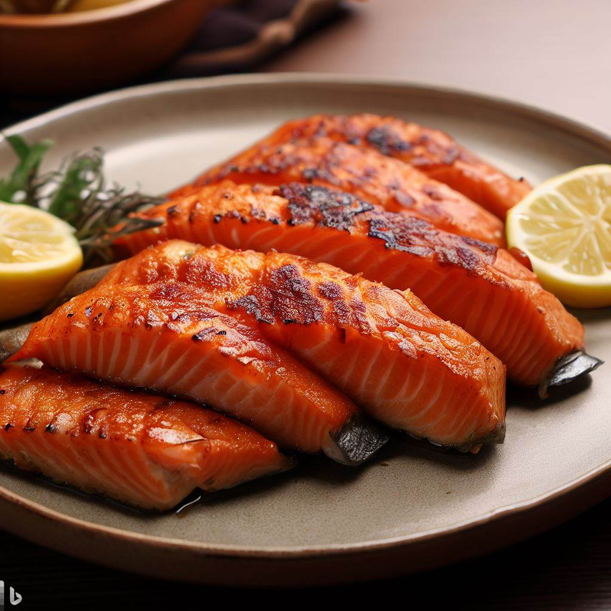

Easy eats
Baked Salmon

| Ingredients |
Amount |
| Salmon fillets |
4 |
| Garlic powder |
1 teaspoon |
| Paprika |
1 teaspoon |
| Salt |
1/2 teaspoon |
| Black pepper |
1/4 teaspoon |
| Olive oil |
2 tablespoons |
| Lemon |
1, sliced |
Directions:
- Preheat the oven to 400°F (200°C).
- Place the salmon fillets on a baking sheet lined with parchment paper.
- In a small bowl, mix together the garlic powder, paprika, salt, and black pepper.
- Sprinkle the spice mixture evenly over the salmon fillets.
- Drizzle the olive oil over the salmon fillets.
- Top each salmon fillet with a few slices of lemon.
- Bake for 12-15 minutes or until the salmon is cooked through and flakes easily with a fork.
- Serve and enjoy!